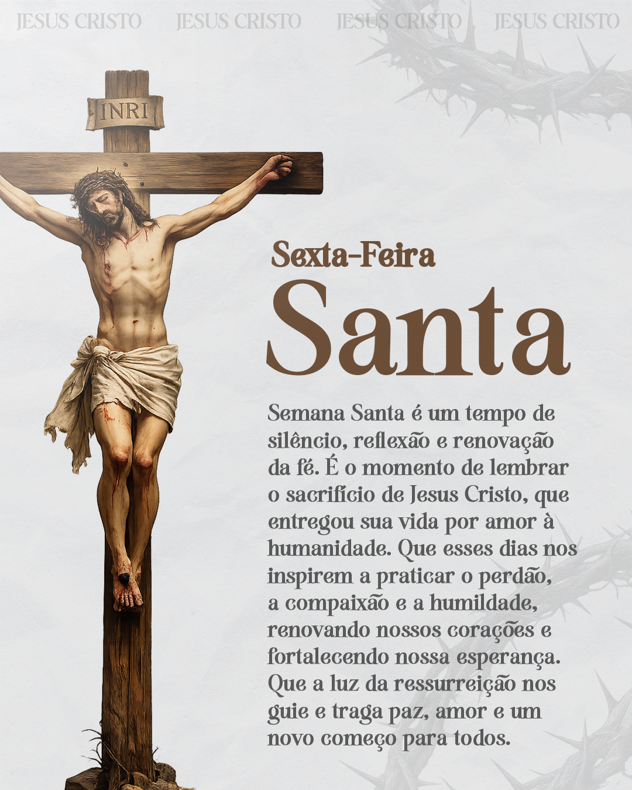

Artes Religiosas – Design Profissional para Igrejas e Eventos Cristãos
Se você está procurando um designer gráfico para criar artes religiosas profissionais, eu posso te ajudar. Desenvolvo designs personalizados para igrejas, ministérios e eventos cristãos, com foco em transmitir a mensagem de forma clara, emocionante e visualmente impactante. Um bom design faz toda a diferença na divulgação de cultos, conferências, campanhas e celebrações especiais.

As artes religiosas precisam ir além da estética: elas devem comunicar fé, propósito e acolhimento. Um material bem elaborado transmite organização, credibilidade e ajuda a atrair mais pessoas para os eventos da igreja, tanto presencialmente quanto nas redes sociais.
Design Criativo para Igrejas
Cada igreja possui sua identidade e estilo, e isso é levado em consideração na criação das artes. Desenvolvo layouts que respeitam a essência da mensagem, utilizando cores, tipografia e elementos visuais que reforçam o propósito da comunicação.
Artes para Cultos e Eventos Especiais
As artes religiosas são ideais para divulgar cultos de domingo, vigílias, congressos, campanhas de oração, retiros espirituais e datas comemorativas como Páscoa, Natal e outras celebrações importantes.
Um design bem estruturado ajuda a destacar informações como tema, horário, local e convidados, facilitando a comunicação com o público e aumentando a participação nos eventos.
Artes para Redes Sociais
As artes são criadas nos formatos ideais para Instagram, Facebook e WhatsApp, garantindo qualidade, nitidez e boa visualização em qualquer dispositivo, seja celular, tablet ou computador. Cada peça é pensada para se adaptar perfeitamente às redes sociais, mantendo um design organizado, legível e visualmente atrativo.
Uma arte profissional chama mais atenção no feed, aumenta o engajamento e contribui para que a mensagem alcance mais pessoas de forma eficiente. Isso é essencial para igrejas que desejam crescer, fortalecer sua presença online e transmitir suas mensagens com mais impacto e credibilidade. Além disso, um design bem elaborado ajuda a criar identidade visual e reconhecimento entre os fiéis.
Confira mais detalhes sobre meus serviços aqui: Designer para redes sociais
Materiais Digitais e Impressos
Além das versões digitais, as artes também podem ser adaptadas para impressão. Isso permite a criação de cartazes, banners e panfletos para divulgação local.
Outra estratégia interessante é combinar com cartão de visita profissional, facilitando o contato com novos visitantes e fortalecendo a identidade da igreja.
Processo de Criação
1. Envio das informações
Você envia todas as informações necessárias, como tema, versículo, data, horário, local e qualquer referência visual que desejar.
2. Planejamento do design
Organizo os elementos de forma estratégica, priorizando a clareza e o impacto visual da mensagem.
3. Criação personalizada
Desenvolvo a arte com atenção aos detalhes, buscando transmitir a essência da mensagem de forma criativa e profissional.
4. Ajustes e entrega final
Após sua aprovação, realizo os ajustes necessários e entrego o material pronto para uso.
Perguntas Frequentes (FAQ)
Você cria artes personalizadas para igrejas?
Sim. Todas as artes são criadas de forma personalizada, de acordo com o estilo e a necessidade da igreja ou evento.
As artes podem ser usadas nas redes sociais?
Sim. Os designs são entregues nos formatos ideais para Instagram, Facebook e WhatsApp.
Posso incluir versículos e informações específicas?
Sim. É possível incluir versículos bíblicos, temas, horários, datas e qualquer informação importante.
Você faz artes para eventos específicos?
Sim. Desenvolvo artes para cultos, congressos, campanhas, conferências, retiros e datas comemorativas.
O que preciso enviar para começar?
Envie tema, versículo (se houver), data, horário, local, logotipo e referências, se desejar.
Um design profissional faz diferença?
Sim. Um design bem elaborado transmite mais credibilidade, chama atenção e ajuda a alcançar mais pessoas.
Solicite sua Arte Religiosa
Se você deseja divulgar sua igreja ou evento com qualidade e profissionalismo, entre em contato e solicite sua arte personalizada.
Se quiser saber mais sobre meu trabalho acesse esse link: Clebson Designer Gráfico
Mais artes desenvolvidas por mim: Arte para açaíteria e Arte para pizzaria